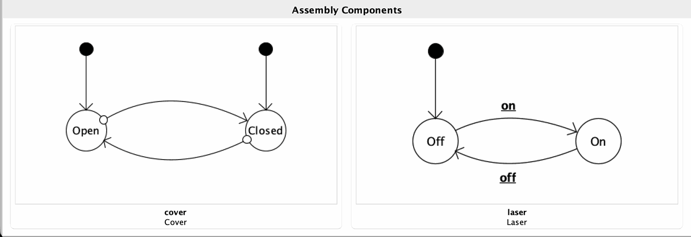
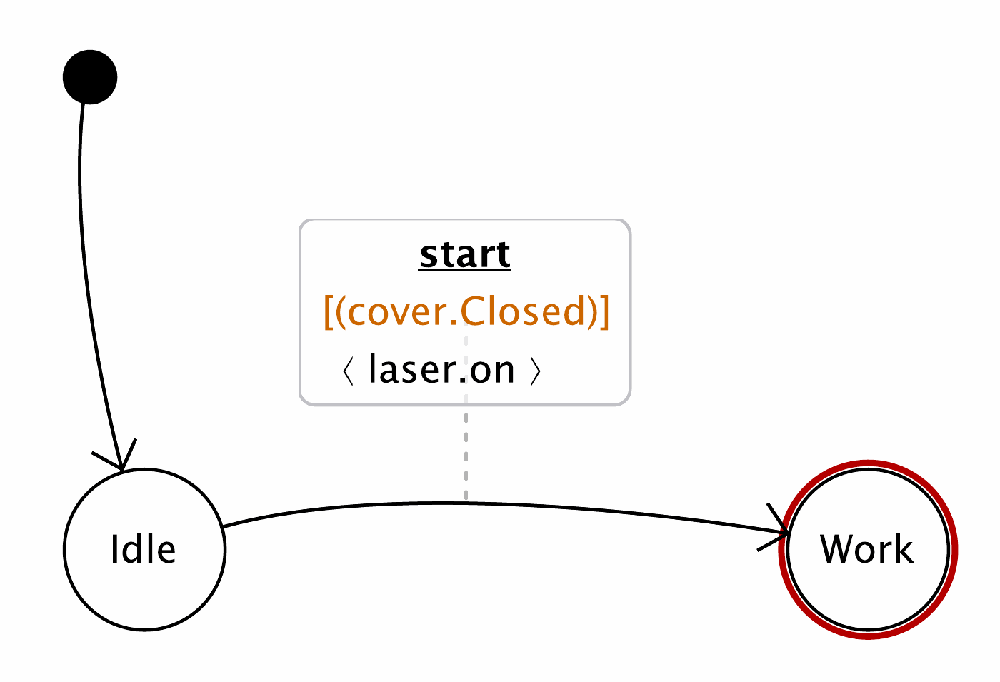
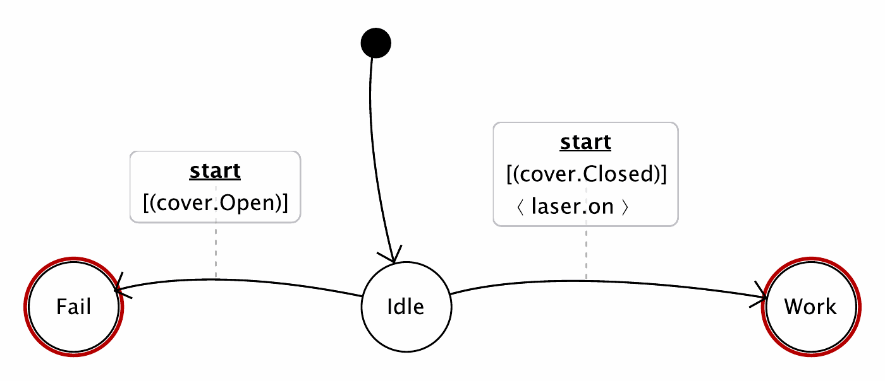
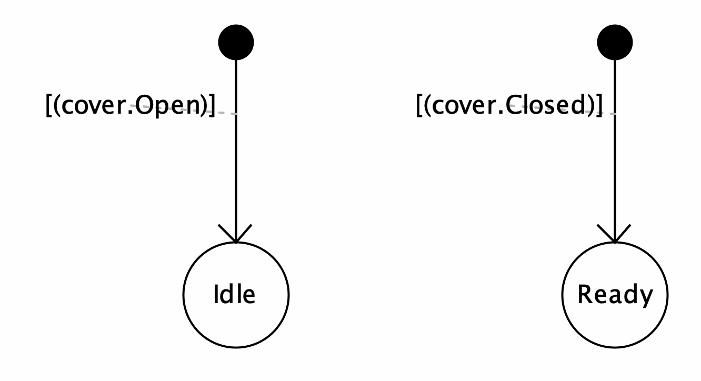
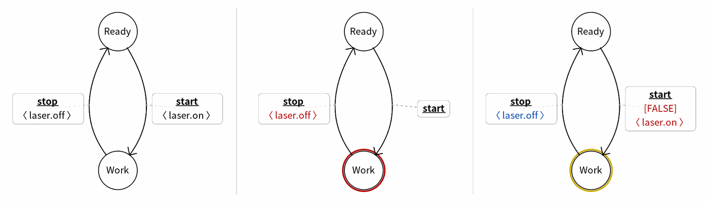
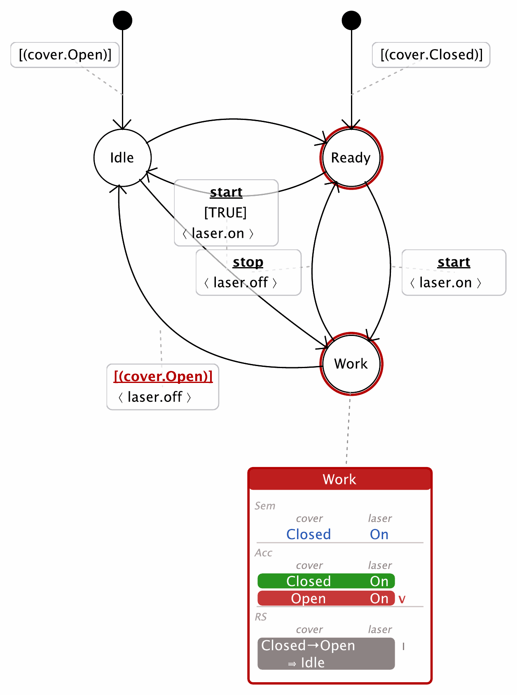

This is the first of three companion notes that develop the Correct-by-Construction rules of Part IV in depth, so the chapter itself can stay light. It follows a single thread—how a controller state acquires its semantics. The incoming transitions are the mechanism: their guards select which configurations pass, their actions transform them, and the accumulated result must stay within the state's declared constraints. Three rules govern this thread: R5 (guards), R6 (actions) and R1 (consistency). Because the very edits that shape a transition reshape the semantics of the states it feeds, transition health and state health are two views of one loop—so this note treats them together.
Recall the inductive construction of Part III, §4. The obtained semantics Conf(s) is not written by hand; it is assembled. Each incoming transition contributes configurations to its target: a guarded transition first selects the subset of the source semantics that satisfies its guard, then—if it carries actions—transforms those configurations, and the results accumulate into Conf of the target. The semantics of a state is therefore literally the union of what its incoming guards and actions deliver.
Two consequences drive everything that follows:
Conf(s) moves, and with it whether Conf(s) ⊆ Sem(s) still holds.Conf(s).The dependency runs both ways: an outgoing transition can only select from the configurations that have actually accumulated in Conf(source). A guard aimed at configurations that never arrive is a dead transition—and can strand the machine in the state (a deadlock, developed in the R7 note).
This is why the three rules belong in one note. R5 and R6 govern what a transition does—the selection and the transformation—while R1 governs what the state becomes. Fixing an R1 violation almost always means editing a guard (R5) or an action (R6) upstream; there is rarely anything to "fix" at the state itself.
R5 — Guard well-formedness. Every enabled transition carries a meaningful guard (never the placeholder FALSE); an autonomous guard's target is a currently valid exit zone (not orphan); and, within a group of transitions sharing a source state and trigger, the guards are non-empty on the source semantics, mutually non-overlapping (determinism), and jointly complete (totality).
Enabled here is meant in the static sense: a transition that is active in the model—one the designer intends to be able to fire—as opposed to one switched off by the FALSE placeholder. It is a different notion from the runtime sense used in the liveness note (R7), where a transition is enabled at a configuration when that configuration satisfies its guard. R5 governs the first: every transition you actually place must carry a real guard rather than the placeholder.
Both notions belong to design time: PWSEditor is a static tool—it never runs the controller. For every state it computes the set of all configurations the assembly can occupy there, across every possible execution, and checks the Correct-by-Construction rules against that picture. The runtime sense is discharged elsewhere: actually firing a transition when a live configuration satisfies its guard happens on a target device—e.g. a PLC programmed in IEC 61131-3 Structured Text—to which the verified controller is exported.
A guard implements the selection step of the inductive construction. On a triggered transition it partitions the source semantics Conf(source): only the configurations satisfying the guard are transferred (and possibly transformed) into the target. The partition is therefore not cosmetic—it decides, configuration by configuration, what semantics is injected downstream. When the partition is malformed, it corrupts that injection in a precise way, and the corruption surfaces later as a state-level symptom.
Micro-example 1 — a partition, built and repaired. The Laser–Cover assembly (Figure 1) has two native configurations, {(laser.Off, cover.Open), (laser.Off, cover.Closed)}. They reach Idle through its initial transition—the arrow from the black dot—which carries no restricting guard and so delivers both: Conf(Idle) = {(laser.Off, cover.Open), (laser.Off, cover.Closed)}. A single start transition guarded by [(cover.Closed)] leaves the partition incomplete—nothing selects cover.Open (Figure 2, guard in orange). Adding a second start transition guarded by [(cover.Open)], to Fail, completes it: the two guards are now disjoint and jointly total, so every configuration is selected exactly once (Figure 3).

cover moves autonomously between Open and Closed, which are both initial states—each denoted by an arrow starting from a black dot. laser switches Off/On only on the controller's on/off commands, starting in Off.
Idle is entered from the initial pseudostate (the black dot), which carries no restricting guard and so delivers both native configurations, Conf(Idle) = {(cover.Open, laser.Off), (cover.Closed, laser.Off)}. Its single start transition is guarded [(cover.Closed)] and selects only (cover.Closed, laser.Off)—nothing selects (cover.Open, laser.Off)—so the partition is incomplete: the start event can occur in a configuration with no defined response. PWSEditor colours the offending guard orange right on its annotation card. (The red ring on Work is incidental to R5: it flags an uncovered exit zone—in Work the cover may open autonomously with no transition to absorb it—a reactive obligation taken up later under R2, not a guard defect.)
start transition guarded [(cover.Open)] is added, targeting a supplementary Fail state that absorbs the open-cover case. The two guards are now disjoint and jointly total—P ∧ ¬P = ⊥, P ∨ ¬P = ⊤—so every configuration in Conf(Idle) is selected by exactly one transition, and both guards return to black on their cards. (Fail and Work still carry red rings for a separate reason—uncovered exit zones, an R2 matter rather than R5. Fail, being a deliberate fail-safe sink, may waive these reactive obligations once marked as a fail state; see R8 and the fail-state setting.)Failure modes.
FALSE guard — the placeholder guard that never fires: an enabled transition that is effectively absent.For space, only the incomplete partition is worked through here as a figure (Figures 2–3); the other modes corrupt the guard set in the same local way and surface through the same guard-label diagnostics.
In PWSEditor. The guard popup (GuardAnnotation) is preventive: it offers only guards meaningful for the current semantics, filtering obvious empties and overlaps, and—for autonomous guards—only eligible exit-zone targets not already covered from the same source. Live diagnostics color the label: red for a FALSE or orphan guard, orange for empty / overlapping / incomplete partitions. FALSE Guard and Orphan Guard reach the Controller Report; the partition checks remain diagram-level.

Idle (guard [(cover.Open)]) or Ready (guard [(cover.Closed)])—disjoint and jointly total over {Open, Closed}, so exactly one initial state is entered.Micro-example 2. Here the same two native configurations arrive separately at Idle and Ready: each initial transition now carries a guard—[(cover.Open)] into Idle, [(cover.Closed)] into Ready (Figure 4)—so (laser.Off, cover.Open) reaches Idle and (laser.Off, cover.Closed) reaches Ready. The guard on the initial transition can thus be read as a partition of the native configurations, one per initial state. It is well-formed—non-empty, non-overlapping, complete. Drop one guard and it becomes incomplete—the cover can start in a value no initial transition selects. Set both to [cover.Closed] and it becomes both overlapping (two transitions claim Closed) and incomplete (nothing claims Open). Each malformation is visible on the guard labels before it ever propagates to a state.
R6 — Action fireability. Every action names a machine.event that is actually fireable from the semantics reaching the transition. An action that is not fireable is a command the component cannot obey.
If a guard is the selection step, an action is the transformation step. An action ⟨machine.event⟩ is applied to each selected configuration, driving the targeted component through the corresponding transition of its interface—⟨laser.on⟩ turns a laser from Off to On—and the transformed configuration is what accumulates into the target's Conf. For this to be meaningful, the component must actually be able to accept that event in the configurations that reach the transition. An action that names an event unreachable from the source semantics is an orphan: a command issued into the void, which either does nothing or describes a component transition that cannot occur.
Failure mode. Orphan action — the action's machine.event is not fireable from the semantics that can actually reach the transition. The command is stale (the event left the component interface) or misplaced (the component is never in a state that accepts it here). Note the semantics-aware caveat the tool honours: when the source-side semantics is not yet available, the action is not flagged—orphan-action detection is only as strong as the semantics it can see.
In PWSEditor. The action popup (ActionAnnotation) collects the valid action set from the source semantics SS (restricted by the guard where possible, falling back to CS); for autonomous transitions it collects them after applying the matching exit-zone transition. Insertable actions are filtered to that set, so orphans are hard to create. An action list containing an invalid action is colored red with a tooltip explaining why, and each invalid action is reported as Orphan Action.

start (Ready → Work) ⟨laser.on⟩ is fireable—the laser is Off in Ready—and on stop ⟨laser.off⟩ is fireable too; both render black. Middle (orphan): start no longer emits ⟨laser.on⟩ (empty ⟨ ⟩), so the laser stays Off, Work never reaches its declared (Closed, On) and is flagged red, and stop's ⟨laser.off⟩ is not fireable from that Off configuration—an orphan action, red. Right (provisional): start's guard is [FALSE], so nothing reaches Work; its Acc is empty and the state is unreachable (gold ring). With no reaching semantics to test against, stop's ⟨laser.off⟩ is validated against the declared Sem only and drawn blue (provisional)—not red, since the action is not wrong; the state is simply unreachable.Three colours for an action. PWSEditor distinguishes three cases when it validates an action against the semantics reaching its transition. Black—fireable, validated against the accumulated semantics Acc of the source. Red—an orphan action, not fireable from that semantics. Blue—provisional: when Acc is empty because the source is unreachable, there is no reaching configuration to test against, so the check falls back to the declared constraints Sem. The action is then drawn provisional rather than black (which would over-assert a validity nothing exercises) or red (the action is not wrong—the state is simply unreachable, already flagged in gold). This provisional blue matches the P / constraints-only marker carried by that state's RS rows, since everything about an unreachable state is derived from Sem alone.
Reproduce it. The three cases are provided as PWSEditor example files under pws-examples/: laserCover-base.pws (valid), laserCover-R6-orphan-action.pws (orphan — start's action emptied), and laserCover-R6-unreachable-provisional.pws (provisional — start guarded [FALSE]). Open one and recompute to see the same colouring; each is a modification of the base laserCover controller.
Micro-example. On the transition Ready → Work, the action ⟨laser.on⟩ is fireable (Figure 5): in Ready the laser is Off, so on is a valid interface transition, and the result (Closed, On) is exactly the semantics Work expects. Put ⟨laser.on⟩ instead on a transition whose source already has the laser On, and the event is not fireable from that semantics—an orphan action, flagged before it can inject a phantom configuration downstream.
R1 — Constraint consistency (safety). For every state s, Conf(s) ⊆ Sem(s): every computed configuration satisfies the declared constraints. When Sem(s) excludes the unsafe configurations, this inclusion is the model's safety obligation.
Unlike R5 and R6, R1 is not an obligation you discharge directly. It is the verdict on the semantics that R5 and R6 injected. Conf(s) is built by accumulation; if any incoming transition selects or transforms a configuration that falls outside Sem(s), that configuration lands in Conf(s), and the inclusion breaks. An R1 violation is therefore always a pointer upstream: it names a state, but its cause is a guard that admitted too much or an action that produced the wrong configuration. When the specified semantics is drawn to exclude the dangerous configurations, R1 is the safety net that catches an unsafe world the moment the wiring lets it through.
Failure mode. Constraint violation — a computed configuration in Conf(s) does not imply Sem(s). The offending configuration row is shown red, the state's dashboard status turns problematic, and the state is listed under constraint problems in the Controller Report.
In PWSEditor. StateSemanticsAnnotation compares each computed configuration against the state's constraints and colors the violating row—and the state header—red. The repair is the round trip: tighten the upstream guard so the offending configuration is no longer selected, or change the action so it is no longer produced, then watch the row and the header return to normal after recomputation.
Micro-example. Let Sem(Work) = {(Closed, On)}. Suppose an incoming transition into Work carries a guard that fails to require cover.Closed, so it also transfers the source configuration with the cover open. Then (Open, On) ∈ Conf(Work) while (Open, On) ∉ Sem(Work): R1 fails, and the (Open, On) row is red. The fix lives on the transition, not the state—strengthen the guard to [cover.Closed], or add an action that closes the cover. Note the contrast with Part III: there, (Open, On) was reached by autonomous evolution (an exit zone); here the very same world is a constructed inconsistency, injected by a mis-wired transition.

start transition Idle → Work is guarded [TRUE]—it fails to require cover.Closed—so it transfers Idle's open-cover configuration into Work. Conf(Work) thus picks up (Open, On), outside Sem(Work) = {(Closed, On)}, and PWSEditor colours the offending Acc row—and the state header—red. Because the controller is fully connected, the inconsistency propagates: Work's stop reaction ⟨laser.off⟩ carries (Open, Off) into Ready, which then violates Sem(Ready) = {(Closed, Off)}—hence Ready's ring is red too. The repair lives upstream: strengthen the guard to [cover.Closed], and after recomputation both states return to normal.The three rules of this note are exercised at two ends of a single recomputation, and PWSEditor is built so that both ends are visible at once. The practical workflow is the round trip:
recalculateSemantics()) and updates Conf(s) / Acc on every affected state's dashboard.FALSE/orphan, orange for partition problems).This coupling is the reason the note keeps guards, actions and consistency together: the annotation editors and the state dashboards are two views of the same computation, and correctness is maintained by moving between them. For the full end-to-end construction of the Cover–Laser controller—where these steps are shown in sequence on real dashboards—see the tutorial in Part VI.
The next two companion notes continue the thread outward from the state: Answering autonomous change: the reactive space (rules R2–R4) and Keeping the controller alive: reachability, deadlock, and the fail-safe exception (rules R7–R8).